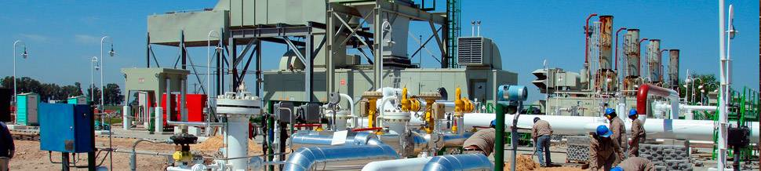

-

-

Plantas compresoras
Hemos diseñado y montado más de 202.800 HP en 37 plantas compresoras,
incluyendo la ampliación de instalaciones existentes en operaciones
hasta nuevos proyectos green field, cumpliendo con la exigente normativa
en materia de prevención de accidentes y calidad.
-

Infraestructura
Ejecutamos la ingeniería y construcción de diferentes obras de infraestructura.
- Acueductos
- Obras de toma,desagües pluviales y cloacales
- Tendido de fibra óptica
- Obras viales y pavimentos urbanos
- Obras ferroviarias
- Plantas potabilizadoras
- Obras complementarias y de mantenimiento en represas
- Instalaciones complementarias en plantas nucleares
- Instalaciones complementarias en aeropuertos.
Pipelines
Con más de 6.200km de ductos construidos, somos líderes en Sudamérica en el diseño
y ejecución de todo tipo de ductos para el transporte y distribución de petróleo,
hidrocarburos líquidos, gas, agua y concentrado de minerales,
en cualquier condición climática, topográfica, ambiental y social,
bajo las más rigurosas normas internacionales de calidad y seguridad,
tal como lo demuestra nuestro portfolio de clientes.
Obras icónicas

Gasoducto Norandino 1998
Gasoducto General San Martín 1997
Gasoducto Cordoba 2009
Gasoducto Mercedes Cardales 2022
Planta de hidrotratamiento de diesel 2014
Gasoducto Tratayen 2021